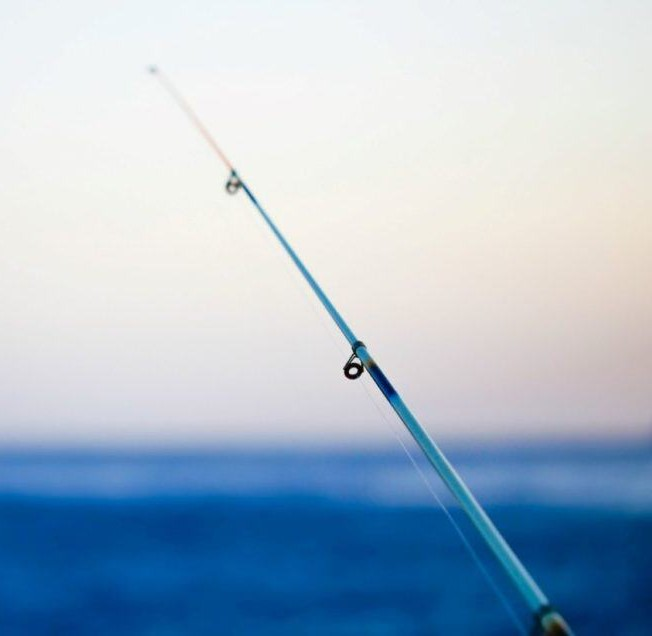

I love trying new food, especially Japanese like sushi! Also, my dad and I do gardening on our balcony. Our favorites are pretty bougainvillea and different varities roses. And guess what? I'm into fishing too! Though i'm still figuring it out, but it's a chill hobby, especially back in my hometowngit pushgit push.

গোধূলির ওপারে
শূন্য
I'm into music too, no specific genre – if it sounds good to my ears, it's a good song for me. Some of my favorite bands include Shunno, Recall, Arnab, Artcell, and Shironamhin.I've added a song above, and it's one of my favorites.